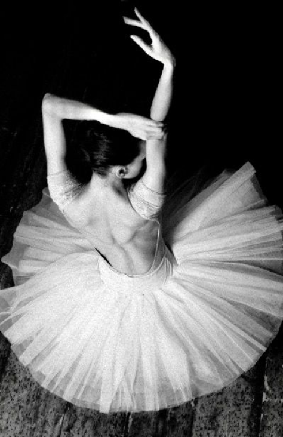
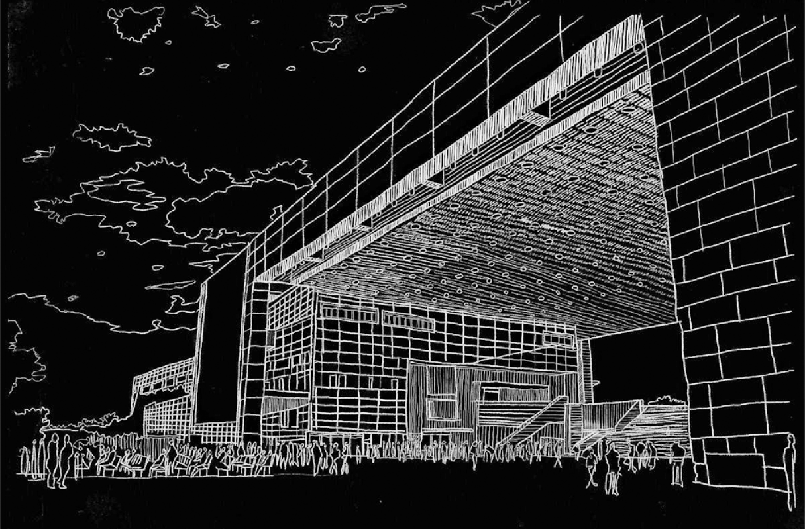
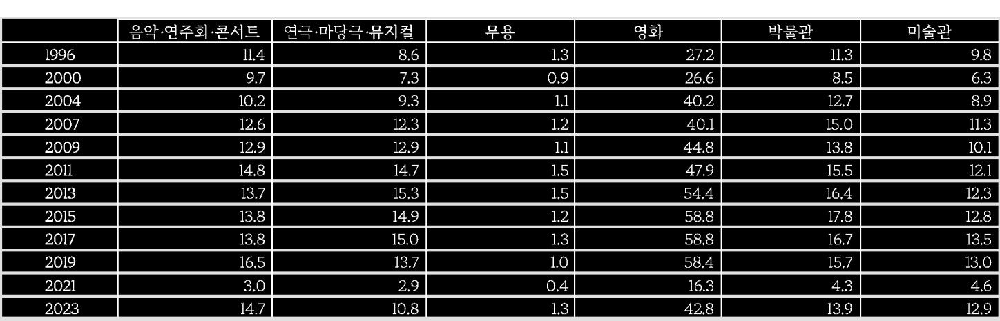
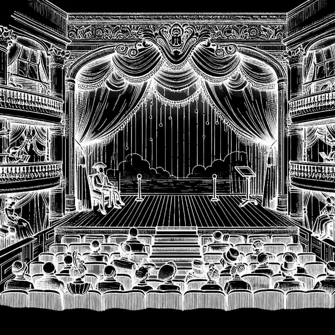

문화예술관람률

정의
지난 1년간 문화예술행사를 관람하기 위해
문화예술시설에 가 본 적이 있는 인구의 비율.
문화예술행사의 종류는 다음과 같다.
문화예술시설에 가 본 적이 있는 인구의 비율.
문화예술행사의 종류는 다음과 같다.
그 외에도 영화, 박물관, 미술관 등이 있다.
통계청 「사회조사」자료로 산출됨.
연극
음악
무용
문학행사




0

1990

1993

1996

2000

2004

2007

2009

2011

2013

2015

2017

2019

2021

2023


0

20.0

40.0

60.0

80.0
(%)
출처 :
통계청, 「사회조사」
*자료 : 통계청, 「사회조사」 각 연도
통계청, 「사회조사」
*자료 : 통계청, 「사회조사」 각 연도
문화관람률
주석 :
1) 문 예술관람률은 지난 1년간 문화예술행사(음악, 연극, 무용, 영화, 박물관, 미술관, 문학행사)를 관람한 적이 있는 사람들의 비율임.
2) 2009년까지는 15세 이상, 2011년부터는 13세 이상 인구를 대상으로 함.
3) 2021년은 현장관람과 온라인관람을 구분하여 조사하였으며, 이 중 현장관람에 대한 수치임.
1) 문 예술관람률은 지난 1년간 문화예술행사(음악, 연극, 무용, 영화, 박물관, 미술관, 문학행사)를 관람한 적이 있는 사람들의 비율임.
2) 2009년까지는 15세 이상, 2011년부터는 13세 이상 인구를 대상으로 함.
3) 2021년은 현장관람과 온라인관람을 구분하여 조사하였으며, 이 중 현장관람에 대한 수치임.
문화예술관람률은 국민의 문화예술 향유를 측정하는 기본 지표이다.
문화예술관람률을 통해 문화예술에 대한 국민의 관심과 참여 수준을 알 수 있다.
문화예술관람률을 통해 문화예술에 대한 국민의 관심과 참여 수준을 알 수 있다.
문화예술관람은 다양한 경로로 삶의 질에 영향을 미친다. 개인적 수준에서는
문화예술 향유의 욕구를 충족시키고 정신건강에도 긍정적인 영향을 주며,
사회적 수준에서는 공동체의 유지에 기여한다.
문화예술관람률은 1990년 33.4%에서 2023년 51.2%로 증가하였다. 외환위기
직후인 2000년에 감소하였으나 2004년부터 지속적으로 증가하고 있다.
이는 국민의 문화예술 향유에 대한 욕구가 커지고 문화인프라와 문화산업이
성장하면서 나타난 현상으로 보인다.
COVID-19가 유행하였을 떄, 외출 제한 및 인원수의 제한으로 급격히 감소한
바 있으나 이는 예외적이다.
남성 점선

여성 실선

2009
2011
2013
2015
2017
2019
2021
2023
0
20
40
60
80
성별에 따른 문화관람률
주석:
1) 문화예술관람률은 지난 1년간 문화예술행사(음악, 연극, 무용, 영화, 박물관, 미술관, 문학행사)를
관람한 적이 있는 사람들의 비율임.
2) 문화예술종류별 관람률은 지난 1년간 해당 문화예술행사를 관람한 적이 있는 사람들의 비율임.
3) 2009년까지는 15세 이상, 2011년부터는 13세 이상 인구를 대상으로 함.
4) 2017년까지 음악·연주회·콘서트에서 콘서트는 조사대상에 미포함.
5) 2021년은 현장관람과 온라인관람을 구분하여 조사하였으며, 이 중 현장관람을 대상으로 한 수치임..
1) 문화예술관람률은 지난 1년간 문화예술행사(음악, 연극, 무용, 영화, 박물관, 미술관, 문학행사)를
관람한 적이 있는 사람들의 비율임.
2) 문화예술종류별 관람률은 지난 1년간 해당 문화예술행사를 관람한 적이 있는 사람들의 비율임.
3) 2009년까지는 15세 이상, 2011년부터는 13세 이상 인구를 대상으로 함.
4) 2017년까지 음악·연주회·콘서트에서 콘서트는 조사대상에 미포함.
5) 2021년은 현장관람과 온라인관람을 구분하여 조사하였으며, 이 중 현장관람을 대상으로 한 수치임..
출처:
통계청, 「사회조사」
자료 :
통계청, 「사회조사」 각 연도
통계청, 「사회조사」
자료 :
통계청, 「사회조사」 각 연도
문화예술관람률은 인구집단별로 뚜렷한 차이를 보인다.
남자보다 여자가 높고, 나이가 젊을수록 높다.
하지만 2009년과 2023년 사이 50대의 관람률이
15.1% 포인트나 증가해 이 추세가 지속될 경우
문화예술관람률의 세대 간 차이가 줄어들 가능성도 있다.
남자보다 여자가 높고, 나이가 젊을수록 높다.
하지만 2009년과 2023년 사이 50대의 관람률이
15.1% 포인트나 증가해 이 추세가 지속될 경우
문화예술관람률의 세대 간 차이가 줄어들 가능성도 있다.
위의 문제는 유럽 국가들과의 비교를 통해 잘 확인된다. 2013년 기준
한국인의 영화 관람률과 순수예술 관람률 차이는 32-52% 포인트에 이르지만
유럽인의 경우에는 그 차이가 15-34% 포인트로 한국인에 비해 훨씬 작다.
문화예술관람의 다양화를 통해 대중문화 관람과 순수예술 관람의 격차를
해소할 필요가 있다
문화예술종류별로 관람률을 살펴보면, 영화 관람률이 가장 높고 무용
관람률이 가장 낮다. 대중문화와 순수예술 사이에 관람률 차이가 매우 크다는
것을 알 수 있다. 이 차이가 단기적으로 국민의 웰빙 차원에서 문제가 될
것은 없으나 장기적으로 문화생태계의 다양성을 유지하는 데에는 중요하다.

문화예술 종류별 관람률
출처:
통계청, 「사회조사」
통계청, 「사회조사」
주석:
1) 문화예술관람률은 지난 1년간 문화예술행사(음악, 연극, 무용, 영화, 박물관, 미술관, 문학행사)를
관람한 적이 있는 사람들의 비율임.
2) 문화예술종류별 관람률은 지난 1년간 해당 문화예술행사를 관람한 적이 있는 사람들의 비율임.
3) 2009년까지는 15세 이상, 2011년부터는 13세 이상 인구를 대상으로 함.
4) 2017년까지 음악·연주회·콘서트에서 콘서트는 조사대상에 미포함.
5) 2021년은 현장관람과 온라인관람을 구분하여 조사하였으며, 이 중 현장관람을 대상으로 한 수치임..
1) 문화예술관람률은 지난 1년간 문화예술행사(음악, 연극, 무용, 영화, 박물관, 미술관, 문학행사)를
관람한 적이 있는 사람들의 비율임.
2) 문화예술종류별 관람률은 지난 1년간 해당 문화예술행사를 관람한 적이 있는 사람들의 비율임.
3) 2009년까지는 15세 이상, 2011년부터는 13세 이상 인구를 대상으로 함.
4) 2017년까지 음악·연주회·콘서트에서 콘서트는 조사대상에 미포함.
5) 2021년은 현장관람과 온라인관람을 구분하여 조사하였으며, 이 중 현장관람을 대상으로 한 수치임..
‘문화예술’ 개념을 통합적으로 사용할 때는
지적이고 정신적인 활동 자체가 주는 ‘문화의 양식성’과 함께
‘구체적인 개별성을 드러내는 예술’까지도 포괄하는 사안을 대상으로 하며,
더 나아가 정치, 경제, 사회 등의 영역과 구별 및 비교하는 가운데
비판적인 성찰의 의미를 담고 있어야 한다.
- 한국연극평론가협회장

지적이고 정신적인 활동 자체가 주는 ‘문화의 양식성’과 함께
‘구체적인 개별성을 드러내는 예술’까지도 포괄하는 사안을 대상으로 하며,
더 나아가 정치, 경제, 사회 등의 영역과 구별 및 비교하는 가운데
비판적인 성찰의 의미를 담고 있어야 한다.
- 한국연극평론가협회장